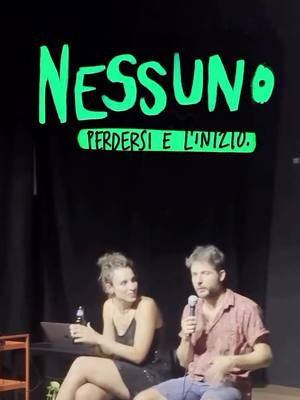
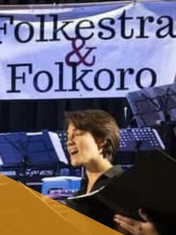

Music, singing and theatre courses in Turin
Music, singing, percussion, DJing and theatre courses and workshops in Turin and around.
Search all workshops31 activities coming up · updated on 27 October 2026
 sun1novMusic and theatreFolkestra open day: play and sing folkSunday 1 November, 10:00–18:00Mirafiori (TO) · Freewith Folkestra & Folkoro
sun1novMusic and theatreFolkestra open day: play and sing folkSunday 1 November, 10:00–18:00Mirafiori (TO) · Freewith Folkestra & Folkoro
from15novMusic and theatreNessuno: a theatre workshop on masculinityfrom Sunday 15 November to Sunday 16 May, every monthBarriera di Milano (TO) · 370 €with Mauro Groppo at Laboratorio MalaErba
sun29novMusic and theatreEnsemble music: a world music workshopSunday 29 NovemberMirafiori (TO)with Simone Bottasso at Folkestra & Folkoro from9janMusic and theatreChange the rules of singing: seminarfrom Saturday 9 January to Sunday 10 January, 09:00–19:00San Salvario (TO) · 180 €with Marco Farinella at Vivere d’Arte
from9janMusic and theatreChange the rules of singing: seminarfrom Saturday 9 January to Sunday 10 January, 09:00–19:00San Salvario (TO) · 180 €with Marco Farinella at Vivere d’Arte- sat30janMusic and theatreImprov workshop: for early yearsfrom Saturday 30 January to Sunday 31 JanuaryTurinwith Mirko Manetti at Reboot Teatro
- sat30janMusic and theatreImprov workshop: advanced levelfrom Saturday 30 January to Sunday 31 JanuaryTurinwith Gregori Yves at Reboot Teatro
- sat20marMusic and theatreImprov workshop: a two-day coursefrom Saturday 20 March to Sunday 21 MarchTurinwith Tiziano Storti at Reboot Teatro
- sun9mayMusic and theatreImprov workshop: one SundaySunday 9 MayTurinwith Valentina Pintau at Reboot Teatro
- dateto be confirmedOtherCascina Roccafranca: this season’s coursesDate to be confirmedMirafiori (TO)with Cascina Roccafranca
 dateto be confirmedMusic and theatreCasi Molto Umani: improv theatreDate to be confirmedSan Salvario (TO)with Cubo Teatro
dateto be confirmedMusic and theatreCasi Molto Umani: improv theatreDate to be confirmedSan Salvario (TO)with Cubo Teatro dateof your choiceMusic and theatreGive voice to your emotions: your own songDate of your choiceTurin · from 35 €with Marta
dateof your choiceMusic and theatreGive voice to your emotions: your own songDate of your choiceTurin · from 35 €with Marta- dateof your choiceMusic and theatreSPLIT Teatro: acting, musicals and singingDate of your choiceMirafiori (TO)with SPLIT Teatro
- everysatMusic and theatreImprov course: Saturday morningsEvery Saturday, 09:00–13:00Turinwith Reboot Teatro
 everythuMusic and theatreAfro percussion: djembe and rhythmsEvery Thursday, 18:30–20:00Barriera di Milano (TO) · 20 € per lessonwith Cheikh Sadibou Fall at Bunker
everythuMusic and theatreAfro percussion: djembe and rhythmsEvery Thursday, 18:30–20:00Barriera di Milano (TO) · 20 € per lessonwith Cheikh Sadibou Fall at Bunker- everytueMusic and theatreImprov theatre course: north TurinEvery Tuesday, 18:30–23:00Turinwith Reboot Teatro
- everymonMusic and theatreImprov theatre course: south TurinEvery Monday, 18:30–23:00Mirafiori (TO)with Reboot Teatro
 everywedMusic and theatreSinging course: voice and polyphonyEvery Wednesday, 19:00–20:15Barriera di Milano (TO) · 150 € per termwith Bunker
everywedMusic and theatreSinging course: voice and polyphonyEvery Wednesday, 19:00–20:15Barriera di Milano (TO) · 150 € per termwith Bunker everymonMusic and theatreGuitar course: rock and pop for adultsEvery Monday, 19:00–20:00Mirafiori (TO) · 44 € per monthwith Andrea Marzolla (Tilt Music) at Casa nel Parco
everymonMusic and theatreGuitar course: rock and pop for adultsEvery Monday, 19:00–20:00Mirafiori (TO) · 44 € per monthwith Andrea Marzolla (Tilt Music) at Casa nel Parco everyfriMusic and theatreTheatre course: mime, clown and spoken wordEvery Friday, 19:30–21:00Barriera di Milano (TO) · 40 € per monthwith Giulia Ruggiero e Maddalena Sighinolfi at Bunker
everyfriMusic and theatreTheatre course: mime, clown and spoken wordEvery Friday, 19:30–21:00Barriera di Milano (TO) · 40 € per monthwith Giulia Ruggiero e Maddalena Sighinolfi at Bunker everytueMusic and theatreDJing course: from basics to your first setEvery Tuesday, 20:00–22:00Barriera di Milano (TO) · 250 € for 8 lessonswith Dj Giolla at Bunker
everytueMusic and theatreDJing course: from basics to your first setEvery Tuesday, 20:00–22:00Barriera di Milano (TO) · 250 € for 8 lessonswith Dj Giolla at Bunker dateof your choiceMusic and theatrePercussion course: playing togetherEvery other Thursday, 20:00–21:30Barriera di Milano (TO) · 15 € per lessonwith Ivan di Buduo at Bunker
dateof your choiceMusic and theatrePercussion course: playing togetherEvery other Thursday, 20:00–21:30Barriera di Milano (TO) · 15 € per lessonwith Ivan di Buduo at Bunker- everytueMusic and theatreMo’Canto: a pop choir for everyoneEvery Tuesday, 20:00–22:00San Mauro Torinese (TO)with Lisa Sartori at upTOyou
 everythuMusic and theatreVoices together: choir singingEvery Thursday, 20:30–22:00Mirafiori (TO) · 25 € per monthwith Fé Avouglan at Casa nel Parco
everythuMusic and theatreVoices together: choir singingEvery Thursday, 20:30–22:00Mirafiori (TO) · 25 € per monthwith Fé Avouglan at Casa nel Parco everywedMusic and theatreMusic production: Ableton Live from scratchEvery Wednesday, 21:00–22:30Barriera di Milano (TO) · 250 € for 10 lessonswith Bunker
everywedMusic and theatreMusic production: Ableton Live from scratchEvery Wednesday, 21:00–22:30Barriera di Milano (TO) · 250 € for 10 lessonswith Bunker everytueMusic and theatreBeginner improv: theatre courseEvery Tuesday, 21:00–23:00Barriera di Milano (TO) · 470 € per yearwith Laboratorio MalaErba
everytueMusic and theatreBeginner improv: theatre courseEvery Tuesday, 21:00–23:00Barriera di Milano (TO) · 470 € per yearwith Laboratorio MalaErba- everythuMusic and theatreImprov theatre course: CuneoEvery Thursday, 21:00–23:00Cuneo (CN)with Reboot Teatro
- everythuMusic and theatreActing course: beginners in north TurinEvery Thursday, 21:00–23:00Turinwith Reboot Teatro
- everywedMusic and theatreActing course: beginner levelEvery Wednesday, 21:00–23:00Mirafiori (TO)with Reboot Teatro
- everytueMusic and theatreActing course: intermediate levelEvery Tuesday, 21:00–23:00Turinwith Reboot Teatro
- everythuMusic and theatreStand Up & Comedy: a comedy courseEvery Thursday, 21:00–23:30Mirafiori (TO)with Reboot Teatro
 everywedMusic and theatreTheatre twist: a course open to everyoneEvery Wednesday, 21:30–23:00Barriera di Milano (TO) · 30 € per monthwith Scaramucce Teatro e Maddalena Sighinolfi at Bagni Pubblici
everywedMusic and theatreTheatre twist: a course open to everyoneEvery Wednesday, 21:30–23:00Barriera di Milano (TO) · 30 € per monthwith Scaramucce Teatro e Maddalena Sighinolfi at Bagni Pubblici